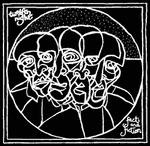

| Artist: | Twelfth Night |
| Title: | Fact And Fiction |
| Label: | Cyclops |
| Length(s): | 71 minutes |
| Year(s) of release: | 2003 |
| Month of review: | [06/2003] |
| 1) | We Are Sane | 10.27 |
| 2) | Human Being | 7.50 |
| 3) | This City | 4.01 |
| 4) | World Without End | 1.54 |
| 5) | Fact And Fiction | 3.59 |
| 6) | The Poet Sniffs The Flower | 3.51 |
| 7) | Creepshow | 11.57 |
| 8) | Love Song | 5.40 |
| 9) | East Of Eden | 3.27 |
| 10) | Eleanor Rigby | 3.22 |
| 11) | Constant (Fact & Fiction) | 2.27 |
| 12) | Fistful Of Bubbles | 3.18 |
| 13) | Leader | 2.40 |
| 14) | Dancing In The Dream | 2.58 |
| 15) | Human Being (alternate) | 3.56 |
Human Being starts with Mann singing while washing through water, leading into a semi intermezzo featuring the theme of Love Song, before starting on the Human Being theme itself. The instruments on this track have a bit of a sparse and flat sound. Despite its length Human Being feels like something between an intermezzo and a demo version.
This City displays Mann's characteristic wobbly guitar play with the supporting synths in the back. World Without End is an instrumental intermezzo featuring gentle keys and guitar.
Fact And Fiction is a bit of a cynical track, clearer showing the wave influences the band also had. As the track progresses, Mann's mania mingles in with the cynicism.
The Poet Sniffs The Flower starts a synth with acoustic guitar track. Pretty friendly, and rather contrasting with the bite of its predecessor and follower. It slowly picks up speed, being driven forward by the slightly neurotic drums.
Creepshow is the sad story of a guide at a creepshow, probably being the creepshow of life, in which perception determines what is truth. Like We Are Sane this is an opus on the lunacy of life, mirrored not only in the lyrics, but also in the music. Once again fantastic.
Love Song echoes that at the end of the day love is the solution to quite a lot. This track is a love song, albeit not about the love for someone, but the love of love. This rather positive song gives an unexpected and rather beautiful end to the regular section of this album that's as cynical possible.
East Of Eden is a pretty rocky track, but still rather progressive. Most of the bonus material shows this band has a pretty strong history in wave and synthipop kind of stuff (which is far less noticeable in the regular album). Eleanor Rigby is a synthi rendition of the classic which is rather interesting and refreshing, although I can imagine that some die hard Beatles fans would be offended by it. Constant (Fact And Fiction) is pretty synthi. Fistful Of Bubbles is on the border between progressive and pop, sort of okay. Leader appears to be an early version of Fact And Fiction, slightly different lyrics and sounding a bit sketchy. Dancing In The Dream is once again pretty synthi, and not very good. Human Being (alternate) is a more compact version, displaying more strength and focus than the original release.